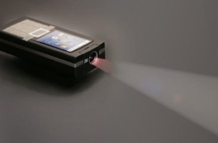

Pico Projector

Il pico-proiettore più sottile al mondo, dotato di un nuovo sistema di lenti abbastanza piccolo da essere integrato negli smartphone. Nonostante i soli 6 millimetri di spessore, è in grado di offrire immagini che sono 10 volte più luminose di quanto possibile con questo tipo di prodotti. Il prototipo è formato da un insieme di microlenti opportunamente modellate, ognuna con il proprio LCD in miniatura.
Il prototipo di videoproiettore consiste in 45 microlenti colorate di rosso, verde o blu. Ogni lente ha, dietro, un LCD con 200 x 200 pixel. La luce che passa attraverso ogni LCD è focalizzata attraverso le lenti e ogni immagine è sovrapposta una sull'altra per produrre l'immagine finale. Il design è stato ispirato da un insieme di microlenti definito "a occhio di mosca", che normalmente è usato per combinare luce da differenti fonti.